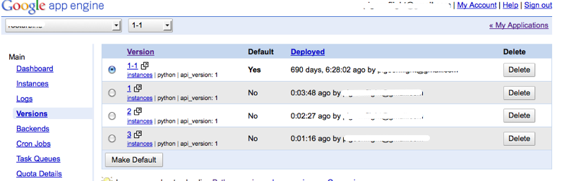

Part 7 - Deploying on Google App Engine¶
Google App Engine (GAE) is sometimes called a platform as a service (PAAS) because it provides specific utilities for things like data persistence, authentication and user management.
Note
If you don’t mind following “the App Engine way” the benefit is a free platform for deploying webscale applications on infrastructure managed by Google. App Engine has a threshold at which point you will need to pay about USD $9 per month, this fee increases as you consume more resources.
While App Engine is great for some application there has been discussion about App Engine charges which suggest some applications are not economical on GAE.
Note
How is the PAAS approach different from normal webhosting? Do you know of any other PAAS systems? Also, it might be a good exercise to read about IAAS and SAAS.
Setting up the Flask GAE Scaffold¶
For working with App Engine we will use a directory structure inspired by this github repository with a flask template for GAE. This will be our standard way of arranging directories for applications that we will deploy to GAE. The scaffold also includes the App Engine Software Development Kit (SDK).
We will refer to this as the GAE scaffold. Download it from http://dl.dropbox.com/u/1004432/flask_gae.zip
The unzipped directory structure looks something like this:
flask_gae
├── app_template
│ ├── application
│ ├── packages
│ └── tests
├── docs
├── google_appengine
│ ├── demos
│ ├── google
│ ├── lib
│ ├── new_project_template
│ └── tools
└── licenses
It bundles the app engine deployment tools and provides onvenience scripts:
- run.sh
- run the application locally
- deploy.sh
- deploy to app engine
The windows equivalents are provided as run.bat and deploy.bat
Note
If you are using Windows make sure that you have setup python to be in your path
set PATH=%PATH%;C:\Python27
What you will need¶
- An account with App Engine (visit http://appengine.google.com to sign up)
- The Flask GAE Scaffold http://dl.dropbox.com/u/1004432/flask_gae.zip
- Python 2.7 (2.6 actually works, though we won’t promise)
Note
When deployed, our application will use Python 2.7, however during development Python 2.6 works in all our tests (If you suspect problems with your local development, get a copy of Python 2.7). To check what version of Python you have use the command python -V
Sign up with App Engine¶
Visit http://appengine.google.com and sign up by creating a new application.

For each application that you create on App Engine there is an Administration section where you can manage Application Settings.
The most import setting for us is the Application Identifier, we will need to know this name.
Setting up your application¶
Download the Flask GAE Scaffold, unzip and create an application by copying the template, running bootstrapflask.py and activating the virtual environment.
The instructions below are for Unix (OS X, Linux etc.).
wget http://dl.dropbox.com/u/1004432/flask_gae.zip
unzip flask_gae.zip
cd flask_gae
cp -r app_template my_app
cd my_app
sh run.sh
Note
bootstrapping is used to create a local virtual environment, it is optional when using the flask gae. This is because flask gae looks for packages in the packages folder. If you still want to use a virtual environment the bootstrapflask.py is provided.
Running your application locally¶
Test that it is working by running the run.sh script:
cd flask_gae/my_app
sh run.sh
Working with an HTTP Proxy¶
When you are ready to deploy you will need to make use of the deploy.sh script. If a proxy is defined in the https_proxy environment variable then requests will be redirected via that proxy.
On unix you can set the proxy like this:
export https_proxy=scalpel:8080
On Windows the deploy.bat script is used and the proxy is set as follows:
set https_proxy=scalpel:8080
Note
For deploying to GAE it is only necessary to set the https_proxy and not the http_proxy, why do you think this is so?
Deploying your application to GAE¶
Edit the app.yaml file (ensure that the value for application matches your Application Identifier.
Deploy your application to Google App Engine
sh deploy.sh
Note
As noted in the section above, remember to export https_proxy=scalpel:8080 or whatever your appropriate proxy settings are if you need to.
Note
For more on proxy issues check out Dealing with on campus proxies
app.yaml and App Engine Versions¶
Your applications can be given new version numbers by configuring them in the app.yaml file.
After deploying a new version you will need to set it to be the default version (this id done in the appengine control panel), if this is not done, visiting your appengine url will show the last version that was set to be the default.
Note
What would be the usefulness of App Engine’s application version management ability?
The default app.yaml file as provided by the GAE Scaffolding:
application: application-identifier
version: 1
runtime: python27
api_version: 1
threadsafe: yes
default_expiration: "5d"
builtins:
- appstats: on
- deferred: on
- remote_api: on
inbound_services:
- warmup
handlers:
- url: /favicon.ico
static_files: application/static/img/favicon.ico
upload: application/static/img/favicon.ico
- url: /robots.txt
static_files: application/static/robots.txt
upload: application/static/robots.txt
- url: /static
static_dir: application/static
- url: .*
script: main.app
Note
Change the application-identifier and, if necessary the version.
Next Lab¶
We will practice deploying a flask application to GAE. We will also take advantage of some of the features provided by the appengine api including:
- The Users API - User account management (Authentication, Sessions, Login)
- The Datastore API (NDB) - Database backend
You can read more about both in getting started with App Engine.